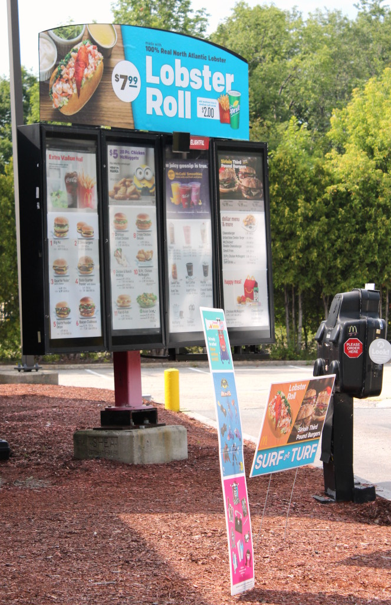

.png)
.PNG)
.PNG)
.PNG)
.PNG)
.PNG)
.JPG)
.JPG)
.PNG)
.PNG)


Alright, we have the car packed and we’re headed to beautiful green Vermont today.  Our inn is in Stowe, but I want you to see a few of the…um…noteworthy (?) places we pass along the way there.  First up…we stop at a McDonalds in New Hampshire for a short break and a cup of coffee, and I just have to take a photo of this…
Yes, lobster rolls available in your local McDonalds’ drive thru. üôÇ
Amazing.

And even better, this McDonalds has a waterfront location on the banks of a flowing stream!
(New Hampshire knows how to do it right!)
Our son had visited Vermont a number of years ago as the “chauffeur” for my in-laws on one of their road trips.  He is our “Vermont expert.”  So another stop along the way is this unique place he wants to visit in St. Johnsbury.

The Dog Chapel…filled with the art of Stephen Huneck.¬† Apparently a large number of people come here with their pets.¬† Who knew?
After going to the dogs, (Sorry, I couldn‚Äôt resist.¬†üôÇ ) we continue on, and our son directs us to another place of interest‚ĶPeacham ‚Äì apparently the most picturesque town in the entire state of Vermont.¬† I am not sure I agree with that claim, but it is a tiny tiny little town (village?) where every house is white‚Ķ
and there is a red barn colored store with everything the residents need.  It appears to be a town that time has forgotten.
We follow the directions from the woman’s voice on the GPS for miles and miles until we are on the outskirts of Stowe.¬† She then send us down some back roads until we see this sign‚Ķ
We’re almost there.
We follow the country road a little further past Edson Hill’s horses…
past their beautiful pond…
and finally make the turn up the drive towards the manor house.
We pass a welcome sign…
some of their lush landscaping…
and we have arrived. üôÇ
In 1941 Edson Hill was built as a private retreat on 400 acres by Rhode Island native, Verner Reed, an heir to a Colorado mining fortune. It became an inn for the first time in 1953.  Much of that acreage has been sold off through the years, and it has changed hands a few times. In July 2014, the 24 room inn along with 38 acres was purchased by three Boston families, one of whom is a designer in the firm of Gathier Stacy Рthe group that redesigned the interiors of the inn this past year Рtaking it from its old look to a new fresh style while still retaining the charm of a Vermont country inn.  Its grand opening was in January of this year, and now it has a new general manager РTom Petot, who greets me in his wood paneled office.
He explains a little about the layout of the inn and the availability of the living room as a common space for the use of all the inn‚Äôs guests. ¬†(I think the living room is much more formal than the guest rooms..so don’t run away if you are looking for the casual spaces.)
(The hallway is lighter and has more of the style I like.)
Mr. Petot also tells me the hours for breakfast, and then he opens the door and points up the hill to the location of our room.  I have reserved one of the renovated guestrooms that is not located in the manor house.  He offers to take us to our room, so I hop back in our car.  He hops in his SUV, and we follow him up the drive a bit.
The grounds at Edson Hill are so very peaceful.¬† Maine was fun but nonstop go go go.¬† Edson Hill is like a deep… breath… of …¬†calm.
Our room is one of 3 or 4 in The Birch House.
This is the view out our door…
(Yes, you can be jealous. üôÇ )
And this stack of firewood is right beside it. ¬†üôÇ
As if the grounds weren‚Äôt enough, when he opens the door to our room I decide…
I’m never leaving this place.
Seriously.
Yes, there is a fireplace in the room…
and a desk that is a much nicer version of the one we have on the back porch.
Mr. Petot asks if there is anything else we need, and then he is on his way to other guests.
We take a peek at the beautiful bathroom…
with its unique art.
The bathroom has some wonderful lighting, heated floors,
and a fabulous walk in shower.
We have died and gone to Heaven. üôÇ ¬†After unpacking, we relax a while outside on those Adirondacks, and then it is time to find a place for dinner.¬† Edson Hill has a highly rated restaurant and a tavern, but on this night, we just want to unwind at some place very casual. (Plus we haven’t made reservations at the onsite restaurant.) ¬†After reading a number of reviews, we drive those winding country roads back towards Stowe and reach their #1 pizza place‚ĶPie-casso. (Yes, pizza!)¬† It is delicious, and if you are in Stowe, you definitely should give them a try!
After dinner, it is back to Edson Hill.  Being from hot hot Georgia and having some medical problems at the time that did a number on my “internal thermostat” I had requested the only room in the inn with air conditioning.  But even in the “heat wave” that is going on in the Northeast, we do not need it.  It is very cool in the evening, and of course, we have to check out that wonderful fireplace.
With the crackling sound of the fire in the fireplace and the quiet of the place, it was one very peaceful and relaxing evening…truly my favorite night of the entire trip.
The next morning, we make the walk down the drive past some farm buildings to…
the restaurant in the manor house for breakfast.
The restaurant is beautiful, but we want to dine outside on the terrace.
The window boxes out there are gorgeous.
As are their pots of plants.
But it is the view from our table that is the main reason we want to eat outside.
Can you imagine having breakfast here every day?!¬† It would be Heaven. üôÇ
Our server this morning is wonderful.  (I wish I could remember her name to thank her here. Darn.)  She treks back and forth from inside to our table outside numerous times with such a lovely and professional attitude.  Breakfast at Edson Hill is not small plates…nor is it a help-yourself buffet.  You are served your breakfast like a meal at home…with the serving dishes on the table.  Our first course is a metal tub of hot muffins with butter.  The second course is yogurt with granola and fresh fruit, and then the big platter arrives. On that morning, we are served scrambled eggs, pan fried potatoes, bacon, sausage, and pancakes for the three of us.
With all of that, we should not need another meal that day!  To burn off some of those calories, we decide to spend some time exploring the beautiful property.  So we follow the stone path…
past the kitchen garden…
and around the pool.
There are trails to follow over the stream and through the woods.
You can explore the area with the horses and go to the pond. There is even a picnic table for you to use at any time.
We enjoy our morning just checking out all the inn has to offer.  And then, sadly, it is time to pack up and say good bye to wonderful Edson Hill. I plan to go back again and spend a number of days there on our next trip to Vermont.  You won’t find a better place to recharge.
And that ends our amazing visit to the inn.  On the next part of the road trip, I want to take you to some towns in Vermont for shopping and eating before we make our final drive back to New Haven.
Until next time…


.PNG)
WOW absolutely gorgeous!! A fireplace in the room?!?!?! I am turning green w envy. Will put this place on my list for sure when we can plan a trip. Thank you for all that you share and all your hard work doing so many posts:)
——————————————————————-
Edson Hill was amazing! I can’t say enough good things about it. So you should definitely add it to your plans. When we return, I want to stay there again (but after sharing this, there may not be any vacancies!)
Kelly
Oh…I’m bookmarking this post! I have to go there…I just may never leave! Can’t thank you enough for giving me so many great ideas! üòâ
Kelly, this stop is my FAVORITE so far. The room…the grounds……ALL OF IT is totally my style. So perfect. Hugs to you!!
——————————————————————–
The favorite for both me and my husband too! It was just perfect and just what we needed at that point in our road trip.
So glad you liked it as well!
Kelly
Kelly,
What a fun trip. Lobster rolls at McDonald’s? I am in! The best lobster roll I ever had was at the New York state fair. I love the Inn and would have enjoyed exploring the grounds. I really need those plaid green pillows in your room. How lovely the whole experience looks. I can’t wait to see the shopping! Thanks for sharing. Take care.
——————————————————————–
Well how fun would lobster rolls be at a state fair! They sure don’t have those at ours! LOL I would have sent you some of those green pillows if they had been for sale Dawn. üôÇ
Kelly
Vermont is high on my list of places to visit too. How picturesque Peacham is! Looks like a spot worth driving through. But the inn, oh how beautiful the grounds are! I was imagining the pool resurfaced in a more naturalistic finish, how much better it would have fit in to the gorgeous scene!! It was still very beautiful though. üòâ I loved the hallway and your room also. How I love those painted planked walls! Your breakfast looked so delicious, for a moment I considered chucking my dinner plans and cooking “breakfast for dinner!” üòâ Edson Hill looks like the perfect place to stay a few days for rest and relaxation!! üôÇ Thank you for sharing it with us.
———————————————————————–
While Peacham was pretty, it was also VERY tiny. You might enjoy this video Gina: http://www.peachamcafe.org/#!video/c1ggp
The inn was perfection. I cannot recommend it enough, and your idea of a stone surface around the pool is a good one! We have a drizzly cool evening here tonight, and breakfast for dinner sounds like my kind of meal.
Kelly
Happy Autumn!!! Wow, you really covered some ground in this post üôÇ This was a treat because I’ve never heard of or stayed at Edson Hill – how peaceful! Love Stowe, lobster rolls at Mickey D’s (downtown Boston on wharf when working in the financial district!) and Dog Mountain, but you are right that the peace of the inn and the property must just take you away to recharge. Thanks for sharing!
On another note, I finally found the Christmas magazine – well done with your house tour and videos! So happy I found your blog, Kelly – the possibilities are perking here!!!
———————————————————————-
Happy Autumn to you! I was so surprised to see those lobster rolls. If I didn’t have a shellfish allergy, I would have tried them just to see how they were. The location of Edson Hill was just so serene. A few days there would be better than any spa treatment. üôÇ
Thank you for your sweet words about the Christmas magazine feature. I think all the people involved from BHG did a wonderful job on the project.
Kelly
You don’t know how happy it makes me to see Lobster Rolls at McDonalds. I don’t like it when we’re all identical everywhere we go. It’s fun to see the regional differences, and I’m so happy McD’s is blending in with their surroundings. Now, if we can only convince Wal-Mart to do the same!
———————————————————————
McDonalds should do peach milkshakes here in Georgia like Chick-fil-a does (or do they do that in the summer in all their restaurants?) I wouldn’t hold your breath on Walmart doing anything regional. The bottom line is what dictates everything they do.
Wish I could have tried those lobster rolls while enjoying the flowing stream there at McDonalds….quite a change from my happy meal by the interstate!
Kelly
Oh my goodness! Completely blown away! As if lobster rolls and beautiful seating at McDonalds weren’t enough! I want to live at Edson Hill. Smitten!
———————————————————————-
Peggy, that is exactly how I felt about the inn! Wish we could all have homes as lovely as it is…those beds!
Kelly
OH, even though I live in Indiana, and I work full time, I would love to take a road trip like that. Looking forward to retirement where I can do that, but it’s about a year off. The breakfast pictures made me very hungry. Loved the Inn. Beautiful pictures Kelly. Thank you.
——————————————————————–
Go ahead and start planning for your first retirement road trip Kaye Ann. It’s not too early to do so! I’m glad you liked the post and the inn. Maybe you can plan a trip there. üôÇ
Kelly
When we honeymooned in Maine, the McDonald’s had blueberry pies not just apple pies. Yummy.
Since you were in Stowe did you go by the Trapp Family Lodge?
———————————————————————
That’s so cool…and SO very Maine! We saw the sign for the Trapp Family Lodge. (It was near Pie-casso!) I had checked to see if there was a vacancy for the time we were there, and since it was booked up, we did not drive up to the lodge. We should have though, just to have seen it.
Kelly
Kelly,
Stowe is beautiful!
Your photos are really, really good. You have a way of capturing the place and making readers feel like they are along for the ride. We just returned from a trip to Seattle, Vancouver,, BC, and several places in Alaska on our way to Denali National Park. I have to say my photos just didn’t capture how beautiful it is out there. Yesterday when we flew back into Seattle from Anchorage the pilot approached the airport in such a way to give us the greatest views of Seattle and the surrounding area. It was breathtaking.
There are so many beautiful places in the world and so many interesting people to meet.
Thank you for writing your blog and taking us along for the ride.
DiAnne
———————————————————————–
Yes, Stowe is VERY beautiful. :)But you were just in some gorgeously impressive places! Our road trip was in August, but my husband returned just last week from a 7 day trip to Canada and Glacier National Park with our Seattle son. He said that the mountains out there are so impressive that photos just cannot do them justice. How wonderful that your pilot treated you to such an amazing view of the Seattle area. I have yet to visit our son out there, but I am planning on that being our next road trip.
Thank you for reading and always leaving such compliments here DiAnne! I am glad you had such a beautiful trip too. üôÇ
Kelly
Hi Kelly. No wonder Vermont was your favourite! It’s so beautiful! Love, love, love the inn. And the breakfast!! We have spent a lot of vacations visiting my sister and her husband whose cottage is on Lake Champlain. Haven’t been in a few years, meeting instead mid point in Freeport, Maine, but may have to travel to Vermont again to check out some of your sites.
By the way, I found the Christmas Ideas magazine last night. I’m teasing myself with a couple of glimpses until I can sit down and read this weekend. Noticed there is more on-line. I hope you are in it! The photo of your daughter, husband and yourself is lovely. So happy you are featured, your style is enviable, so warm, inviting. What a gift you have and we are the happy recipients – thank you!
———————————————————————-
Well Tricia, I am so glad you loved loved loved the inn! (I did too!) I think you would really enjoy Vermont over Freeport, but the shopping IS wonderful in Freeport.
Yay to finding the magazine! I do hope you enjoy it this weekend. No, I am not in the videos online…just my daughter. Thank you for your very sweet comment here.
Kelly
I cannot put into words how much I am enjoying this road trip! We did ‘New England in the Fall’ for our honeymoon a couple of years ago, and you are bringing back so many happy memories. Two of our stops were Bar Harbor and Stowe (though we did not stay where you did). I loved the whole trip (we did all of the New England states) but my very favourites were Maine and Vermont, and I would love to go back and spend more time there. Thank you so much for this flashback! üôÇ
———————————————————————
Frances, I think we are just following in your footsteps! LOL But we did not get the gorgeous fall leaves like you did. I want to go back again for that in a couple of years, and like you, spend more time. I’m so glad our road trip has brought back happy memories for you! üôÇ
Kelly
Beautiful! I am truly enjoying your road trip!
——————————————————————-
Thanks Vicki! I am glad to have you along for the ride. üôÇ
Kelly
You’re right, Vermont seemed like a breath of fresh air. I loved so many things about the Edison Inn. It also seems like the surrounding area is lush and green. My kind of place.
Is there more to this road trip? I’m so excited.
xo,
Karen
———————————————————————
It is all VERY green in the area. Even the view out the back window of our room looked out upon a very green forest.
More road trip? Let’s see…Stowe and Waterbury are next, followed by Yale and New Haven, then our son’s apartment, and then 2 surprise posts that finish up the whole thing. You are really going to love them!!
Kelly
p.s. Maybe by then I will have some fall decorating to share on the blog. üôÇ
What’s not to love?! These inns are so wonderful– peaceful and tranquil. Vermont must be close to Heaven?! Loved everything — I can see why you need to go back!! Can you imagine how this area will look later in the fall? And then the first snow fall and the holidays? THIS may be the place for your sleigh ride?? Something to dream about— can’t wait to go “shopping” in the little shops!!:)
————————————————————————
Oh I cannot imagine how gorgeous it would be in the fall. Those trees surrounding the pond will be full of bright red and yellow leaves reflected in the water. And a fire in the fireplace will actually be really needed then. üôÇ I thought I had read somewhere about the possibility of them doing sleigh rides there, but I do not know if the details have actually all been worked out. It would be perfect!
Hope to take all of you shopping very soon. üôÇ
Kelly
My favs—-your bedroom (Ah! restful and neat and symmetrical :} ), and dining al fresco. Perfect.
Glad to hear you enjoyed traipsing through the countryside.
Yes, it looks like it merits a return.
——————————————————————–
Take a look at their website. I think you will be smitten with all the guestrooms. I did like ours the best too though. üôÇ
Definitely merits a return trip…one year with all the children for Christmas perhaps!
Kelly
Spectacular! I loved the time we spent in Vermont many years ago, and I loved this post. The Inn located in Stowe made me want to take a deep breath and smell the crisp air. Oh, gracious! Were those beds as comfortable as they looked? I am glad you were able to stay there and give us a little taste of what you experienced. Thank you. I am enjoying this ride! Can’t wait for the next stop!
Are we there yet?
Anticipating patiently,
Sherry
———————————————————————–
Vermont is just wonderful, and it reminded me an awful lot of north Georgia. Yes, those beds were great! I am so glad you are enjoying the trip Sherry. No we are not there yet…more to go, but I think we will be home by next Friday. üôÇ
Kelly
Wow!!! Lobster rolls at McDonalds!! That white hallway! Those adirondacks! Your room with a fireplace! The fluffy towels! That shower! The pizza! That restaurant at the manor house! Your breakfast! Those flower boxes! And, shopping tomorrow!(Can’t wait!!!)
——————————————————————–
Yes, wow to everything at Edson Hill AND Stowe! I really think we could happily live in that town, but the winters would be VERY cold (but I would get my snow. üôÇ )
Kelly